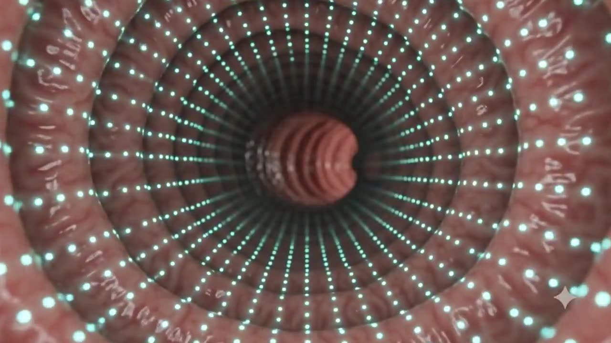
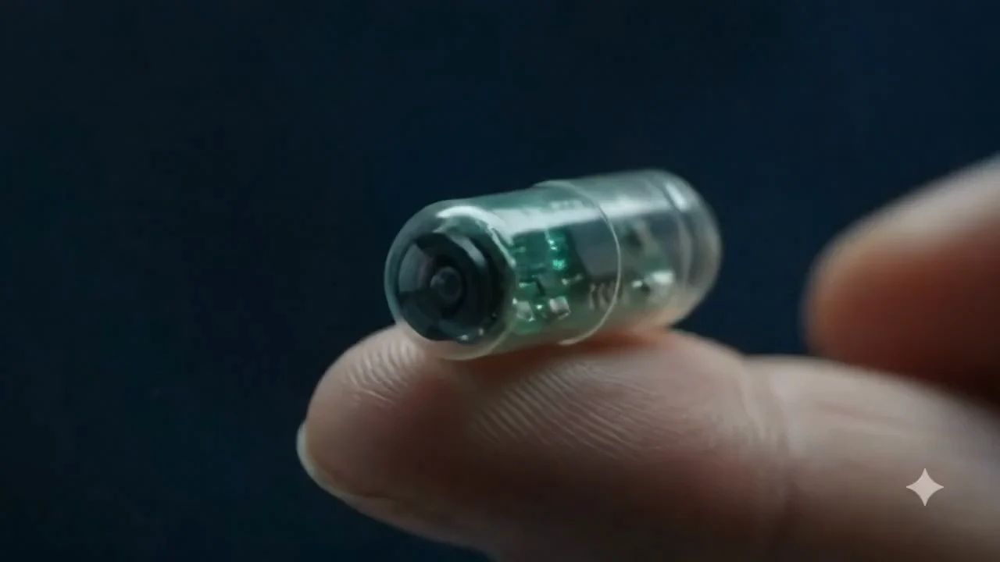
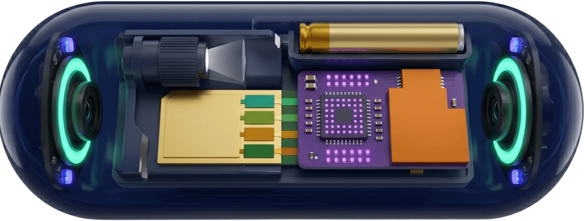
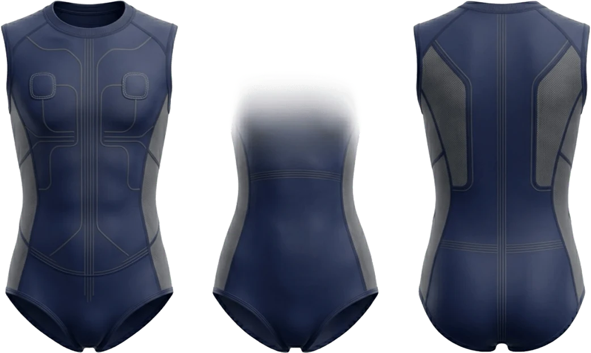
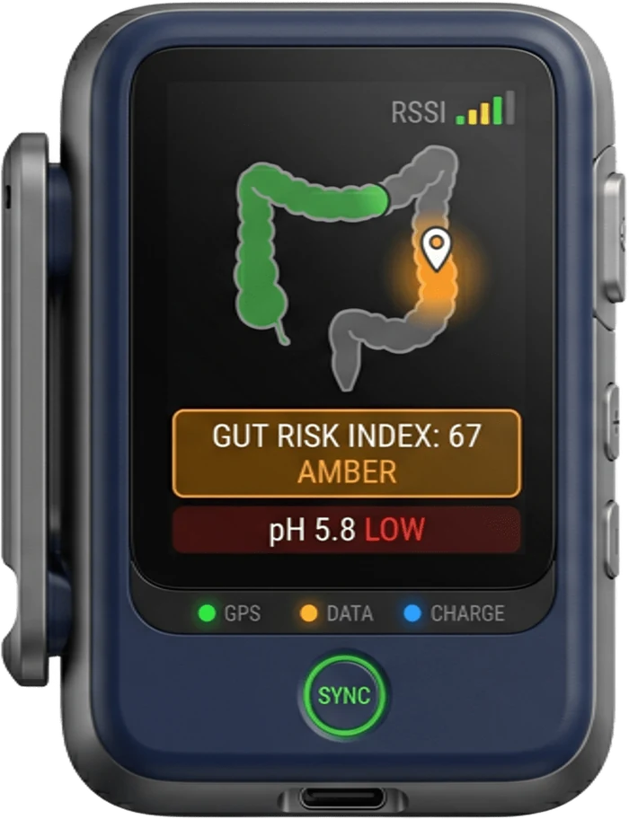

Ingerisci la capsula
A casa, con un bicchiere d'acqua. Senza lassativi né sedazione.

Una capsula da ingerire a casa. Immagini e biosensori in un unico esame, senza preparazione intestinale.
ScorriOggi devi scegliere tra un test semplice che vede poco e un esame completo che spaventa. ARGO-GIM nasce per non dover più scegliere.


Render di concept. Tocca un numero o scorri l'elenco.
Riprendono la parete intestinale lungo tutto il percorso, con l'illuminazione integrata.
Misurano temperatura, pH, specie reattive dell'ossigeno ed emoglobina: quello che le immagini non possono vedere.
Il microcontrollore tiene i fotogrammi utili e scarta quelli ripetuti. Si trasmette meno, la batteria dura di più.
Invia i dati al gilet indossato, che riceve il segnale e stima la posizione della capsula.
Pensata per durare tutto il transito, con una chimica più sicura di quelle a elettrolita liquido.
Luce strutturata per stimare la profondità e doppia fotocamera RGB e NBI per la versione clinica.
Tutto dentro una capsula dalle dimensioni simili alle capsule endoscopiche già in uso.
Animazione di conceptA casa, con un bicchiere d'acqua. Senza lassativi né sedazione.

Leggero, sotto i vestiti. Le antenne seguono la capsula lungo il percorso.

Il ricevitore registra tutto e ti mostra in tempo reale a che punto sei.
L'app riassume l'esame in un indice di salute intestinale e lo confronta con i precedenti.
Scorri: la capsula attraversa il colon e i biosensori aggiornano le letture, tratto dopo tratto.
0 fotogrammi analizzati a bordo · 0 trasmessi
Se qualcosa cambia, te lo segnala e ti accompagna dal medico al momento giusto.
Ore di video diventano pochi minuti di revisione, con le lesioni già evidenziate e classificate. L'ultima parola resta al medico.
Se la tua domanda non è qui, scrivici.
Non ancora. ARGO-GIM è un progetto in sviluppo: oggi siamo alla fase di concept e design, e il prossimo passo è il prototipo funzionale. Prima di arrivare a te dovrà superare test preclinici, studi clinici e la marcatura CE come dispositivo medico.
Le capsule endoscopiche si usano in clinica da oltre vent'anni. ARGO-GIM è progettata con materiali biocompatibili secondo la norma ISO 10993, radio a bassa potenza e una batteria allo stato solido. La sicurezza andrà comunque dimostrata nei test preclinici e clinici previsti dalla roadmap.
Ha dimensioni simili alle capsule endoscopiche già in uso, 28 × 12 mm, e si ingerisce con un po' d'acqua. Con le capsule attuali la maggior parte delle persone non avverte il transito.
Viene espulsa naturalmente. Il gilet ne segue il percorso fino all'espulsione, così sai quando l'esame è concluso. È monouso: ogni esame usa una capsula nuova.
No. ARGO-GIM Lite ti aiuta a conoscere e seguire nel tempo la salute del tuo intestino, ma non fa diagnosi: continua a seguire il programma di screening della tua regione e le indicazioni del tuo medico. Se qualcosa cambia, l'app te lo segnala e ti invita a parlarne con un medico. ARGO-GIM Dx è pensata per l'uso clinico, sempre sotto la guida del medico.
La capsula elabora i dati a bordo e trasmette solo ciò che serve, con cifratura dalla capsula all'app. Il progetto segue il GDPR: i dati si usano per la ricerca solo in forma anonima e con il tuo consenso.
Il prezzo verrà definito insieme al prototipo e ai primi partner. Il nostro obiettivo è un esame accessibile, che si possa ripetere nel tempo.
Lasciaci la tua email: ti scriviamo solo per i passi importanti, dal primo prototipo agli studi clinici.
degli italiani invitati fa lo screening del colon-retto. Nessuna area raggiunge l'obiettivo del 50%.
Adesione 2024, 50–69 anni; linea tratteggiata = obiettivo 50%. Fonte [1]sopravvivenza a 5 anni del cancro del colon scoperto in fase localizzata, contro quello scoperto in fase metastatica. Arrivare prima cambia tutto.
Fonte [2]Una capsula ingeribile è un dispositivo medico ai sensi del Regolamento UE 2017/745: per entrambe le versioni il percorso passa dalla marcatura CE.
Architettura, render, modelli 3D
Biosensori e radio su banco, brevetto
Biocompatibilità e sicurezza elettrica
Fattibilità, poi confronto con la colonscopia
Prima Lite, poi Dx
Dottorando in Biotecnologie per la Medicina Molecolare · multi-omica del cancro colorettale
Dottoranda in Sanità pubblica · specializzanda in Farmacologia e Tossicologia Clinica
Studentessa di Farmacia
Se lavori in uno di questi ambiti, scrivici. Anche chi non investe può aiutarci.